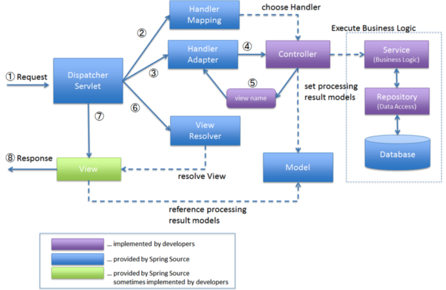
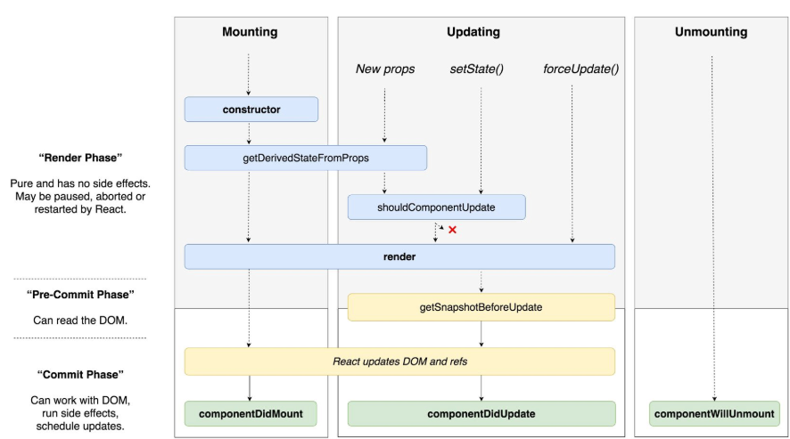
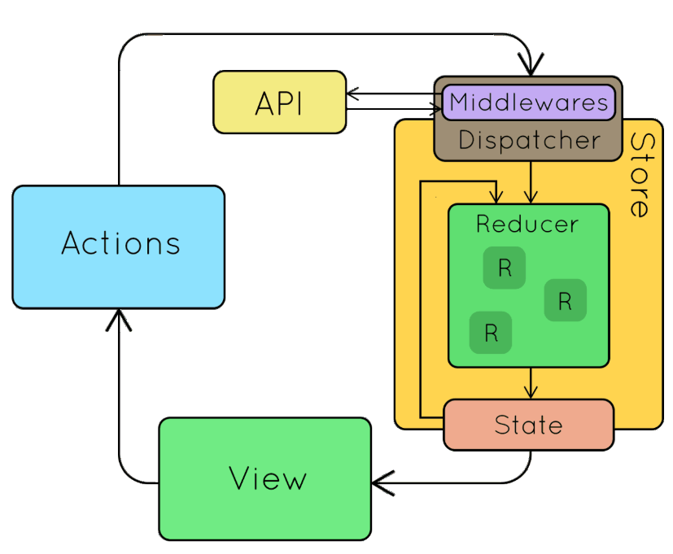
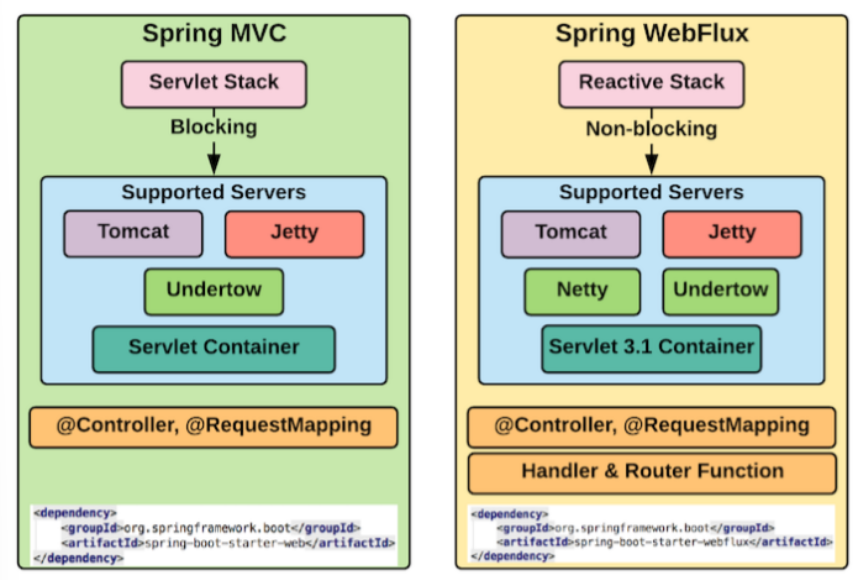
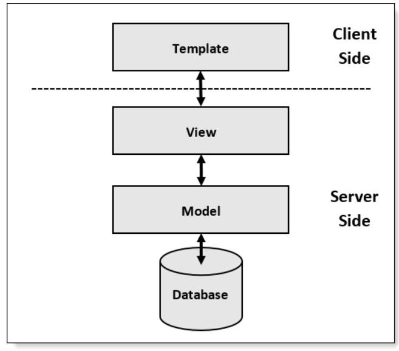
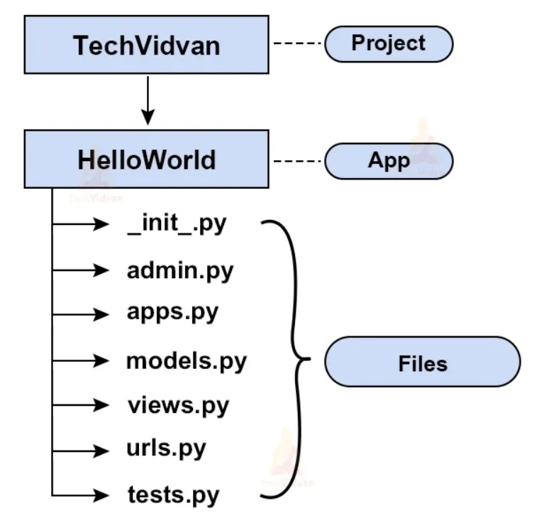

chapter 0. 프레임워크 개요¶
1절. 프레임워크 정의
2절. 프레임워크 개발 필요 요건
3절. 프레임워크 종류 및 동작 방식
1절. 프레임워크 정의¶
프레임워크란?¶
프로그래밍에서 특정 운영 체제를 위한 응용 프로그램 표준 구조를 구현하는 클래스와 라이브러리 모임 - Frame(틀) + work(일) 의 합성어 - 일 구조, 작업 구조 - 어떤 일을 처리하기 위한 구조 - 목적에 필요한 것을 고민할 필요 없이 이용할 수 있도록 일괄로 가져다 쓰도록 만들어 놓은 구조화된 틀 - 대용량 요청 처리를 위한 쓰레드 및 비동기처리 실행
동작 방식¶
- 전체 동작 방식은 프레임워크가 제공
- 개발자는 프레임워크의 일정 부분만 개발-
- 즉, 부분 커스터마이징 진행
예시 : 웹 프레임워크의 경우(Spring MVC 요청 처리 과정)¶

1) Path, Params, Header, Body로 파싱 및 디코딩 수행 2) 보안 / 인증 설정에 따라 보안 / 인증 처리 수행 3) 요청 수행할 Handler / Router로 요청 전송 4) Handler에서 응답 메시지 생성 5) 사전에 정의된 타입 기반 HTTP 응답 6) Handler나 Router가 없거나 에러 발생 시 에러 HTTP Status와 HTTP 메시지 응답
- 개발자의 경우 실제 도메인 영역인 보라색 부분만 개발 진행(동작 방식 3)
2절. 프레임워크 개발 필요 요건¶
- 프레임워크의 개발은 알아야 하는 정보가 많기 때문에 아래와 같은 요건의 이해가 필요
도메인 이해¶
-
사용하는 프레임워크마다 상이한 도메인에 대한 이해 필요
-
웹 프레임워크의 경우
- HTTP가 무엇인가?
- API가 무엇인가?
- DB가 무엇인가?
-
프론트엔드 프레임워크의 경우
- HTML DOM이 무엇인가?
- HTML이 DOM을 어떤 방식으로 조작하는가?
프레임워크의 동작 방식¶
- 추상화된 전체 동작 방식
- 전체 동작 순서를 인지하는 과정 필요
-
동작 순서 인지 후 프레임워크의 어떤 부분에 대한 구현이 필요한지 확인 필요
-
웹 프레임워크의 경우
- 인증 / 보안 기능 구현 : Router / Handler 접근 전의 로직 수정 필요
- node.js의 middleware
- Spring의 filter
프레임워크 사용법¶
-
구현하는 방법에 대한 이해도 필요
-
Spring의 경우
-
필수 Annotation에 대한 이해
-
React의 경우
- react hook들이 렌더링의 어떤 단계에 실행되는가
- state는 어떻게 관리하고 변경하는가
3절. 프레임워크 종류 및 동작 방식¶
React : Frontend Framework¶

- State 변경에 따라 Virtual DOM을 변경하여 HTML을 랜더링하는 프론트엔드 프레임워크
-
동작 방식
Rendering 요소인 React Component가 Mounting되고, state가 Updating되고, Unmounting될 경우 각 상황에 맞는 함수(componentDidMount, componentDidUpdate, componentWillUnmount)를 실행하고 Rendering 하는 방식
-
단계별 동작 함수는 (1) Override, (2) react hook의 useEffect를 사용하여 정의
- Updating은 state 변경 혹은 새로운 props 주입을 통해 실행
- Rendering 시 보이는 부분은 JSX 언어로 정의
- 결론
component의 LifeCycle과 state 갱신, Rendering 부분 정의 시 Mounting 및 state Updating을 감지하고 다시 Rendering(DOM Updating)은 React에서 처리
Redux¶

- React의 state 관리를 위해 나온 state 관리 Framework
- 페이스북에서 만든 아키텍쳐 패턴인 Flux Pattern의 구현체
-
동작 방식
사용자에게 Rendering된 View(Component)에서 Event 발생 시 Action 발생
Action은 Middleware(saga, thunk)를 통해 API를 호출하는데 사용
새로운 Action으로 변경되어 Reducer에 전달되거나 바로 Reducer에 전달
Reducer에서는 Action에 따라 state를 변경하고 해당 state를 사용하는 모든 View(Component)에 갱신을 알려주어 Rendering 수행 -
개발자는 각 부분 Action, State, Reducer, Middleware 정의
- Action을 발생시키는 지점을 생성하여 Redux를 사용
- 각 부분 정의 후 Action 발생 시 Redux는 위의 과정으로 동작 수행
Spring & Spring MVC & Webflux)¶
Spring¶
- Bean Object 관리 Framework
- 프로젝트의 규모가 커질수록 사용빈도 증가
- J2EE에서 제공하는 대부분의 기능을 지원하기 때문에 JAVA 개발에 있어 대표적인 Framework 역할
- JDBC, iBatis, 하이버네이트, JPA 등 DB 처리를 위해 널리 사용되는 라이브러리와의 연동 지원
-
전자정부 표준 Framework의 기반 기술
-
특징
- 경량 container로 lifecycle 관리
- 필요한 Object를 Spring으로부터 받아옴
- DI를 지원하여 Object 간 의존 관계 설정 가능
- AOP 지원
- Transaction 처리를 위한 일관된 방법 제공
- 영속성 관련 API 지원
-
API 연동 지원
-
동작 방식
Annotation이나 XML을 통해 각종 Bean(Component, Controller, Service 등)들을 정의
Bean을 생성하고 해당 Bean을 사용하는 다른 Bean에게 의존성 주입 수행
Spring MVC¶
- Spring을 이용해 만든 Web Framework
- 동작 방식
Spring이 실행되어 MVC가 HTTP 요청을 처리하도록 각 부분 주입
개발자들은 Controller, Service, Repository를 정의하여 도메인 처리 방식 정의
MVC가 자신의 방식에 맞는 호출 진행
Configuration을 통해 View Resolvor나 JDBC 접속방식을 재정의해 개발자가 원하는 스타일의 View와 DB 사용 가능
요청을 도메인에 보내기 전 실행되는 Filter를 정의하여 HTTP 요청에 대한 사전 검증 및 인증 처리 수 가능
Spring WebFlux¶

- thread가 아닌 비동기 방식으로 요청을 처리하는 Framework
- 동작 방식은 MVC와 유사
- Process를 관리하고 요청을 처리하는 부분이 thread 기반의 Servlet에서 Reactive로 변화
Django¶

- Python에서 가장 많이 사용하는 Web Framework
- MTV(Model - Template - View)를 구현한 Framework
- 쉬운 DB 관리를 위해 Project를 생성하면서 Administrator 기능 제공
- 쉬운 URL 파싱 기능 지원
- 동일한 소스코드로 다른 나라에서 용이하도록 번역 기능 지원
- 날짜 / 시간 / 숫자 등의 format 타임존 지정 등의 기능 제공
-
동작 방식
Django의 View로 URL요청이 들어올 경우 Model을 변경하고 Template에 주입하여 반환하거나 그냥 API 응답 진행
실제 개발은 Model, View, Template을 정의하면 개발 가능
APP을 정의하여 설정을 추가하고 Admin을 정의하여 관리자 페이지 정의 가능
(Template과 동작은 기본 제공) -
폴더 구조

AngularJS¶
- JavaScript 기반 Framework
- MVC(Model-View-Controller) 모델과 같은 Web Application Framework에서 지원하는 기능 제공
- JavaScript 또는 JQuery로 만든 코드의 길이 단순화 가능
- 직관적으로 Source 이해 가능
- 재사용이 쉬운 정적인 UI Component 생성 가능
- HTML, CSS 개발자와 JavaScript 개발자의 명확한 분리